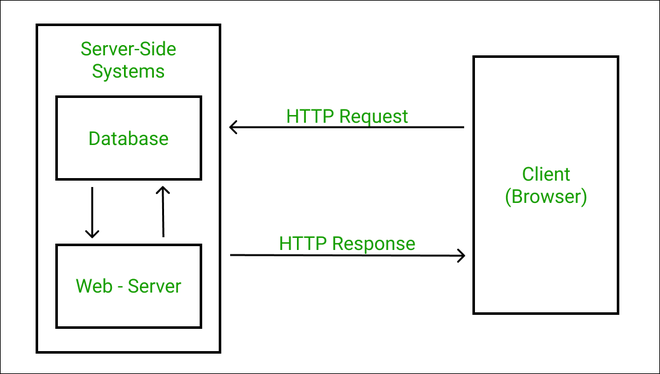
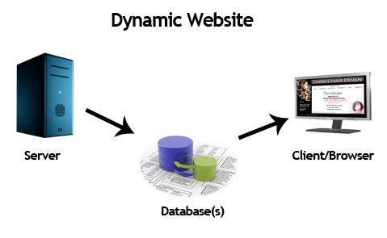

WEB PROGRAMMING

CONTENT
INTRODUCTION TO WEB:CLIENT\SERVER CONCEPTS

Web pages are a collection of data, including images, text files, hyperlinks, database files etc., all located on some computer (also known as server space) on the Internet. A web server is dedicated software that runs on the server-side. When any user requests their web browser to run any web page, the webserver places all the data materials together into an organized web page and forwards them back to the web browser with the help of the Internet. Therefore, we can conclude that: -
A web server is a dedicated computer responsible for running websites sitting out on those computers somewhere on the Internet. They are specialized programs that circulate web pages as summoned by the user. The primary objective of any web server is to collect, process and provide web pages to the users.
This intercommunication of a web server with a web browser is done with the help of a protocol named HTTP (Hypertext Transfer Protocol). These stored web pages mostly use static content, containing HTML documents, images, style sheets, text files, etc. However, web servers can serve static as well as dynamic contents. Web Servers also assists in emailing services and storing files. Therefore it also uses SMTP (Simple Mail Transfer Protocol) and FTP (File Transfer Protocol) protocols to support the respective services. Web servers are mainly used in web hosting or hosting the website's data and running web-based applications.
The hardware of the web servers are connected to the Internet that manages the data exchange facility within different connected devices. In contrast, the software of web server software is responsible for controlling how a user accesses delivered files. Typically, web server management is an ideal example of the client/server model. Therefore, it is compulsory for all computers that host websites (whether with state or dynamic web page content) to have web server software.
COMPONENTS OF WEB APPLICATION
Web application architecture comes with two types of web application architecture: Structural components, and user interface app components.
Structural Components:
As the name suggests, these components make the structure of the application. These components include the client or web browser, database server, and web app server which are directly responsible for functions deciding the user interactions within the application. In the majority of cases, JavaScript, CSS, and HTML are used to create these components. However, it all varies with the web app developer.
User Interface Components:
The other one is the user interface components that contribute to the visual interface of the app. However, unlike structural components, that do not interact with the architecture, but are limited to displaying the web page. These components include a dashboard, widget, settings, notifications, and many other visual elements that help in making the user experience better. In other words, these components are directly responsible for the UX or the web app.
TYPES OF WEB CONTENT
Web content is the text, visual or audio content that is made available online and user encountered as part of the online usage and experience on websites. It may include text, images, sounds and audio, online videos, among other items placed within web pages.
In the book Information Architecture for the World Wide Web, Lou Rosenfeld and Peter Morville wrote, "We define content broadly as 'the stuff in your website.' Web content may include webpage document pages, information, software data and applications, e-services, images, audio and video files, personal Web pages, archived e-mail messages stored on email servers, and more. And we include future web content as well as present web content roadmap.Content management
Content management
Because websites are often complex, a term "content management" appeared in the late 1990s identifying a method or in some cases a tool to organize all the diverse elements to be contained on a website.[2][better source needed] Content management often means that within a business there is a range of people who have distinct roles to do with content management, such as content author, editor, publisher, and administrator. But it also means there may be a content management system whereby each of the different roles is organized to provide their assistance in operating the system and organizing the information for a website. A business may also employ various content protection measures, which are typically technologies used to attempt to frustrate copying without permission.
OVERVIEW OF HTTP-REQUEST AND RESPONSE

Request Method
The request method indicates the method to be performed on the resource identified by the given Request-URI. The method is case-sensitive and should always be mentioned in uppercase. The following table lists all the supported methods in HTTP.
1 GET
The GET method is used to retrieve information from the given server using a given URI. Requests using GET should only retrieve data and should have no other effect on the data.
2 HEAD
Same as GET, but it transfers the status line and the header section only.
3 POST
A POST request is used to send data to the server, for example, customer information, file upload, etc. using HTML forms.
4 PUT
Replaces all the current representations of the target resource with the uploaded content.
5 DELETE
Removes all the current representations of the target resource given by URI.
6 CONNECT
Establishes a tunnel to the server identified by a given URI.
7 OPTIONS
Describe the communication options for the target resource.
8 TRACE
Performs a message loop back test along with the path to the target resource.
GENERATION OF DYNAMIC WEB PAGES

A dynamic website requires significant back end complexity to enable front end flexibility. It does not store each page as a separate HTML file—rather, the web server builds the pages when a user requests the page. The server pulls the website’s data from the database (or databases) and constructs a custom HTML file for the user. When the server finishes building the page, it ships the HTML file back to the end-user’s browser.
Dynamic websites use various client-side and server-side languages to build web pages on the back end. Examples include JavaScript, HTML, and CSS for the client-side and Python, Ruby, and PHP for the server-side. The amount of information pulled to generate the page varies, and the process can be complex. The end-user does not see the back end process, only the resulting web page in the browser. The user experience is similar to that of a static website.
Crucial data points that dynamic websites can leverage to customize content and functionality include:
Viewer demographics: Age, gender, interests, and other relevant demographic factors are taken into account to display tailored content to different user segments.
Time of day: Depending on the user’s local time, dynamic websites can showcase special offers, news updates, or relevant messages to further pique their interest.
Location: By identifying users’ geographic locations, the website can show region-specific promotions, facilitate faster delivery options, or list nearby offline stores.
Language settings: Understanding users’ preferred languages allows dynamic websites to present content that is both intuitive and culturally appropriate, increasing the likelihood of conversions.
Today, most websites are at least partially dynamic, incorporating some level of dynamic content. Social media platforms, news media sites, blogs, web apps, and eCommerce sites all require responsive, interactive content.
Static vs Dynamic Websites
Static websites store a set number of ready-built files written in client-side languages on a web server. The server returns HTML files based on the user’s URL requests. There is no manipulation of the files before shipping to the client—the page is identical for all users. Static content can still be engaging and interactive, for example, by including buttons, links, and visuals.
On the other hand, dynamic websites display different content in different formats, depending on the visitor. The time, location, preferences, and other user settings determine the web page’s appearance. This approach enables a customized user experience. While static sites can be effective, dynamic websites can enhance the user experience and appear more professional. However, they require more skill and complexity to develop.
APPLICATION SERVERS

Application Server is a type of server designed to install, operate, and host applications. In the early days of application servers, there was a huge growth in the number of applications brought to the Internet. Those applications became bigger and bigger with the demand for adding more and more functionalities to the application and become more complex to run and maintain. There was a need for some kind of program on the network while it will share application capabilities in an efficient and organized manner.
How Application Server Works
An application server works in conjunction with other elements such as media servers and session controllers, providing business logic and intelligence for delivering supplementary services to business customer users and residential service subscribers. Application servers were initially used in VoIP and IP Centrex applications and were originally voice-centric. Contemporary application servers support multimedia IP communications including unified voice, video, text chat and presence. In enterprise communications networks an application server is often referred to as a unified communications servers.
WEB SECURITY
In general, web security refers to the protective measures and protocols that organizations adopt to protect the organization from cyber criminals and threats that use the web channel. Web security is critical to business continuity and to protecting data, users and companies from risk.In general, web security refers to the protective measures and protocols that organizations adopt to protect the organization from cyber criminals and threats that use the web channel. Web security is critical to business continuity and to protecting data, users and companies from risk.